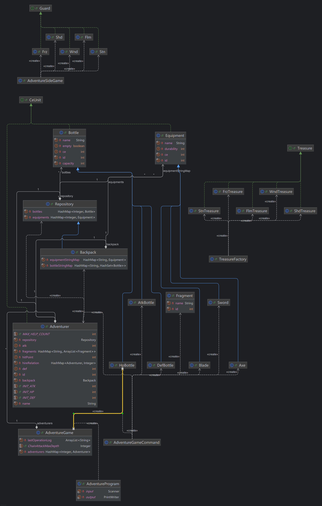

北航2024面向对象程序先导课程心得
你好！本文章为该博客的第4篇文章！
本文章即将作为该课程结课作业提交至CSDN！
北航2024面向对象程序先导课程心得
前言
在知道这课有博客作业之前，我是动过心思把这课内容写在博客上的，后来犯懒了没做，没想到现在不得不写了（
既然作为作业，那就有作业必须要有的内容，从整体架构到各类心得体会，还有课程建议，这些都是必选项。不过在此之外，我觉得也应该在这里留一些给后人的提示，毕竟如果你是通过我的博客看这个文章的话，那也许你是希望学到一点东西的。
希望各位能通过这个课程和我的博客，能够对面向对象设计的模式有一点理解，至少最好摆脱可能会有的大一的抽象命名和混乱架构（
整体架构

由于这几次作业的迭代任务较为简单，以及最后一次作业实际上给了完成度较高的代码，所以实际上我所完成的结构比较简单扁平。大体上说，我的架构可以分为以下几部分：
- 副本相关：由Shd，Flm，Stn，Wnd，Frz类管理副本内怪物信息，各怪物具有其Treasure类管理各怪物守卫的宝藏信息，TreasureFactory类作为宝藏工厂。以上内容由AdventureSideGame类统一管理，负责协助AdventureGame类处理冒险者挑战副本的请求。
- 药水和装备：由Bottle类管理单个药水信息，Equipment类管理单个装备信息，二者均存在各个派生类管理不同类型的药水或装备信息。
- 仓库和背包：由Repository类管理冒险者拥有的药水和装备信息，并让继承Repository类的Backpack类管理冒险者携带的药水和装备信息。
- 冒险者：由Adventurer类管理单个冒险者信息，包含基本信息与状态，物品仓库与背包，持有碎片，雇佣关系。
- 主要游戏：由AdventureGame类作为核心，管理所有冒险者的信息，处理来自AdventureGameCommand类解析出的各类请求，并记录最后一次操作产生的输出信息。
- IO与输入处理：由AdventureProgram类进行IO操作，读入数据经过AdventureGameCommand解析后发送给AdventureGame进行处理。
可以看得出来，这个结构比较扁平，很好理清楚思路，所以迭代开发的时候几乎不需要费什么力气就能找到该在哪里加东西，该怎样对原有函数的某部分进行修改，学习起来的时候也能一下就捋清楚。
但是其实迭代后期对于雇佣关系的处理还是略显混乱，对本应做成观察者模式的援助和解雇操作还是没有做的很好，文件结构上也没有很好的对各个类进行更细致的分门别类，总而言之就是，还能调。
迭代要点记录
初次作业——准确的判断？
从第一次作业的结果来看，实际上当时我就意识到了层次化的重要性，把文件连续拆了好几层。当时的整体框架是，AdventureProgram作为IO和输入处理，然后AdventureGame管理各个冒险者，让冒险者管理各个药水和装备，这也算是为后续开发开了个层次化的好头吧。
同时，从这次作业开始就经常有人把跟头栽在了for循环内删元素的操作，也算是对未来的一个警醒吧，一开始测试ArrayList玩，触发这个问题之后我应该是没有这么干过。
不过和后续相比，没有仓库和背包也算是给自己留的第一个改进点，毕竟当时确实没法想到还有携带和非携带的区别。
迭代开始——一个可以打磨的细节
第二次作业和第一次作业相比，主要是添加了三个概念：药水的使用，更多药水，战力和攻防。药水使用就是新添一个是否使用的属性和操作属性的方法（当时只需要从没用过到用过，做个use即可），更多药水主要是用继承来做好各类药水，战力主要是添加接口来约束类内的战力计算。顺便，我当时把仓库类提前做了出来，并且“跟着OIer的直觉”给很多ArrayList换成了HashMap，也算是为未来做了一个提前规划吧。
以及，仓库类的出现也让我提早一周意识到了删除操作要同时对仓库和背包进行，未来看到许多人这么挂的时候，我倒是非常感谢自己了（
但是当时设计的一个问题就是，我们在做可以饮用的更多药水瓶的时候，肯定是有饮用后要给冒险者加成的效果，这就要求所有药水都要有一个给冒险者加成的方法，然而我当时的做法是给Bottle类加个getEffect返回加成的值，然后其他子类都重载这个函数，再在Adventurer的饮用药水瓶方法里把加成加到冒险者身上。
现在思考过来，既然从这次作业开始Bottle这个基类不会也不应该被创建出来，并且药水瓶产生加成的计算逻辑主要是在药水瓶身上，那还有另一种处理方法：给Adventurer类添加一些增加攻击力防御力血量的方法（这个方法是相对稳定不变的），饮用药水的时候调用药水的use方法，然后方法内使药水调用Adventurer的增加属性方法，这个处理是否更好呢？不过考虑到这个写法的耦合情况，我直到现在都是比较犹豫的。
继续迭代——失误，反思
这次迭代充分证明了当时对仓库和背包拆分的正确性，但是也因此产生了一个带走强测整整40分的bug，所以我也说不上好坏了。
装备类型的细化很好说，类似上次迭代一样如法炮制即可，受击血量的计算我沿袭了之前对药水的处理，把对冒险者状态的操作写进了Adventure类，战斗功能就是在这个基础上对一个ArrayList里的防御者遍历两遍而已。碎片兑换也是一个比较好维护的东西，开个HashMap也可以快速解决。
至于背包，重名问题很好解决，HashMap解君愁。然而先前的设计模式带给了我第二个问题：如何更新背包最大容量呢？这个问题其实和药水的饮用，装备的攻击差不了多少，但是最大的区别就是背包塞入物品的时候需要时刻获取冒险者的攻防和。那么在背包不知道自己的主人的情况下，这个“时刻”该怎么做呢？答案是：我当时不知道为啥，忘了这茬，压根就没更新过背包最大容量。于是，-40。
来到bug修复，发现这个问题之后，我麻了。最后的解决方法比较草率，每次添加瓶子的时候多传一个参数表示最大可装同名瓶子数。现在再看的话，或许我会选择让背包记录一个主人？毕竟，一个背包还能有两个主人吗（x）
最后迭代
感觉这次迭代可说的就比较少了。雇佣与援助系统和观察者模式联系紧密，递归攻击纯粹考基本功（和HashSet的使用），秘境工厂副本考工厂模式（然而课程组直接给代码了）。没有什么特别可圈可点的迭代问题。
心得体会
关于JUnit的使用——相信，但是别偏信
这几次作业里，我经常听到很多同学有这么一句话：我JUnit写的挺敷衍的，要不你再看看有啥问题吧。很不幸的是，我写的不那么敷衍，但是还是被刀了40分。
其实，JUnit确实是个很方便的东西，单元测试可以让你对某一个单元进行非常细致的尝试，而不需要考虑针对整个项目或者部分项目的极其难以构造（还不一定覆盖的全）的样例。然而……
单元测试正确不意味着连接就正确。——AOSTL（
然后我就对单元测试产生了标题里的态度了。JUnit该写全写全，一定能发现绝大多数问题，但是各类连接问题还是需要看原函数咋写的，有时候甚至得脑测几遍。
单元样例的构造也是一个艺术。比如说对于递归攻击的样例构造，我当时选用的是一个深度为7的满二叉树，攻击其中一个靠底层的节点，一个根节点，然后这两个节点的雇佣关系有一点重叠，这样一次性也许就能测出一堆问题。还有诸如“A雇佣B，B攻击A，攻击用武器只有1点耐久”的离谱情况，这也是一个单元测试就能干的，但是……很离奇，需要一点智慧和对规则的理解（
关于面向对象——条理与简化条理
面向对象相对于面向过程的最大区别就是，面向对象里什么东西都要作为对象处理，这也就疯狂引导你去思考如何优雅的把某个事务的某些特征打包成一整个类。从整体上来说，一级又一级的类替代了单纯打包数据的结构体，类内约束好的方法和属性替代了散落一地的函数和变量，整个项目在你眼前会一下就变得清晰而简单。
继承，封装和多态则是从不同的方面去帮助你完成这个思考过程的特性。继承不用多说，一个是代码复用的想法，一个是提取共性的想法；封装则是希望你不去关注一个类的过多的细节，从而在类与类交互时不要搞出各类混乱的互相操作；多态则更像是一种“偷懒的艺术”，对不同对象做极为类似的操作时，不需要在调用方法的时候思考什么方法精准适配这个类，而是可以直接一股脑的丢进一组功能相似，内容不同的函数的某一个里进行处理。
总体来说，面向对象像是在传达这样一个信息：顾全大局，做好框架之后，再去深入细节。
关于CheckStyle——约束与可维护
初学OOpre时，CheckStyle对很多人来说都是一个紧箍咒，我身边的朋友就曾跟我抱怨过这玩意让他变量命名做的非常……难受。后来他因为第一次迭代写的挺乱而第二次被迫重构了。然而，使用CheckStyle之后，我也没见过几个debug非常困难的朋友了，很多时候他们能快速捋清楚代码内容了（这和我上学期对数据结构课的debug形成鲜明对比）。所以，这玩意在大二初就出现，可以说是一种对6系学生的最大的收获了。很多时候，如果你不去痛苦的学习一个让自己受益终身的东西（或者工具方法，或者课程学业），你永远感觉不到这玩意的好处，我想这就是CheckStyle在课程里出现的意义所在吧。
对课程的建议
嗯……老实说，OOpre算是我在大二上感觉非常舒服的一门课程，感觉确实能学到很多东西。但是，在迭代开发任务之外的各类debug和填充代码的任务，却总是让人感觉……如学，好像什么都没学到一样（也许可能学到了什么？），或许课程组可以尝试对这部分零散的作业再开发开发？
结语
想说的也都说完了其实。未来的OO正课将会强度爆炸，但我仍然坚信每个人都有在这门课里拨云见日的时候。
祝大家OO正课愉快！